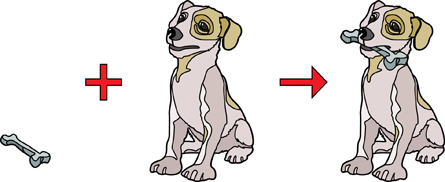
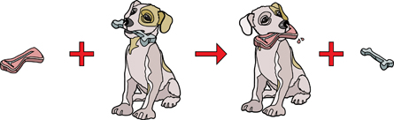

Module 6—Petrochemicals
 Read
Read
You might recall from previous science courses that chemical reactions can be classified. You will also recall that certain reaction types tend to happen with certain reactants. A multiple bond between carbon atoms, like those found in alkenes and alkynes, can participate in a type of reaction called an addition reaction.

Read pages 419–421 in the textbook to learn how addition reactions can be used to produce organic halides.
Early in this lesson you were asked to consider how you could use a hydrocarbon molecule to create a hydrocarbon derivative and to describe the changes that needed to occur to transform the molecule into the derivative.
substitution reaction: a type of organic reaction involving breaking a carbon-hydrogen bond and replacing the hydrogen atom with another atom or group of atoms
If you thought this change required substituting a hydrogen atom for a chlorine atom, you were well on your way to understanding substitution reactions, another reaction type used to make organic halides.

Read pages 421–423 in the textbook to learn more about substitution reactions.
 Self-Check
Self-Check
SC 3. Complete “Practice” questions 6–11 on page 422–423 in the textbook.